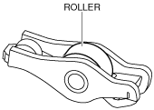

ROCKER ARM INSPECTION
id011000904800
1. Rotate the roller or the rocker arm by hand and verify that rotates smoothly.

2. Visually inspect the rocker arm surface where it contacts the HLA and valve stem for wear or damage.